CHINESE BUDDHIST SCULPTURE
水月观音
一膝支起，一臂舒展。
把看过的水月、南海与自在坐观音放到一起。从夏威夷到波特兰，从木色、石面到金漆，同一个姿态有许多种样子。
细看这12件作品 ↓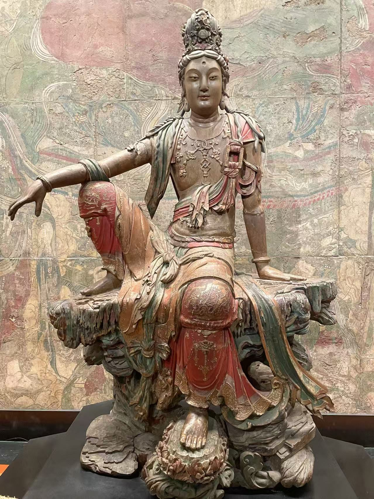
纳尔逊－阿特金斯艺术博物馆
宋代 · 释心月
水月观音赞
觉天无云，性海无风。
玉轮蘸影，金浪翻空。
非惟观世音，我亦游其中。
SELECTED WORKS
一件一件看
12 件作品


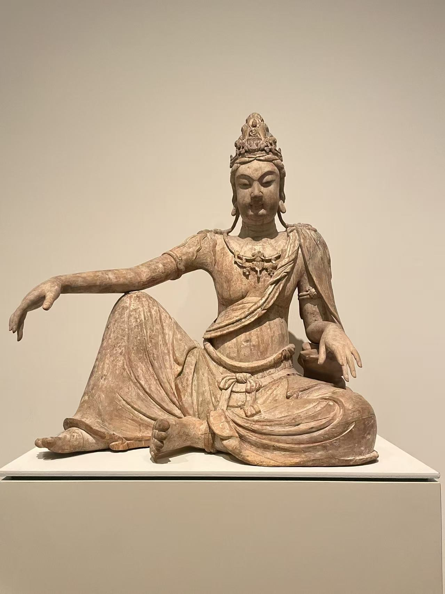
纽约 · 大都会艺术博物馆02
水月观音
Bodhisattva Avalokiteshvara in Water Moon Form (Shuiyue Guanyin)
- 年代
- 辽，11世纪
- 材质
- 柳木，残存彩绘；多木块拼接
- 编号
- 28.56
横向伸展的手臂和斜垂的衣纹，围绕着稳定的躯干展开；未被彩绘覆盖的木色让结构更容易辨认。
作品札记与资料
馆方说明，这件作品以多个木块拼合，使用木榫和铁钉连接。水月形象在这里指向观音的净土补怛洛迦山；展厅里独立陈列的造像，原本属于宗教空间中的一个世界。
展签与馆方网页的拼接表述略有差异，此处依馆方现行记录。
基本信息据现场展签整理；照片 © Merton。

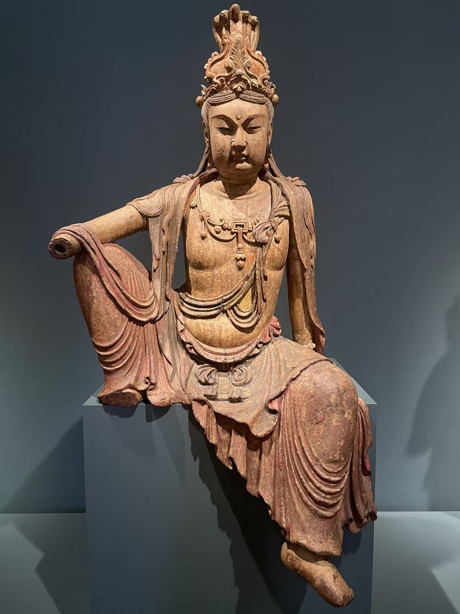

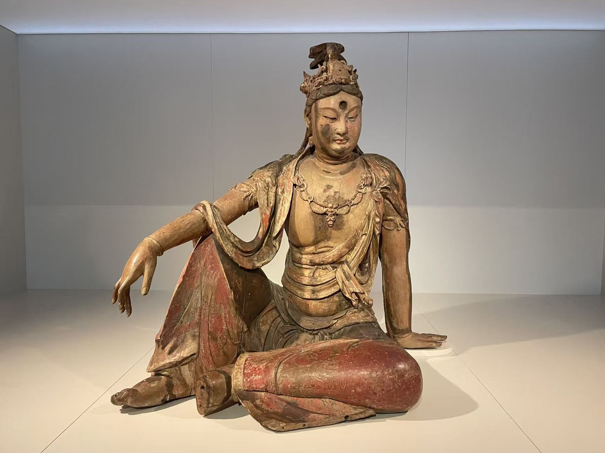

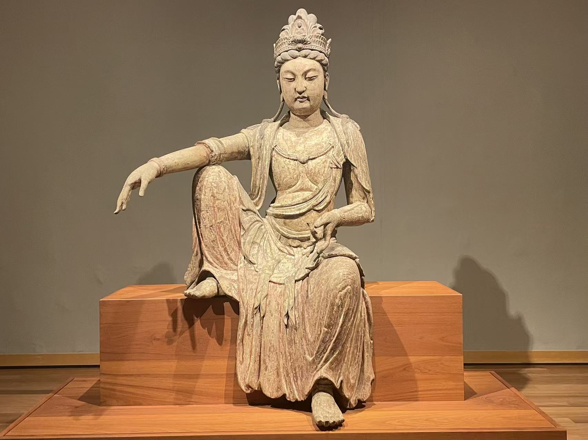
檀香山 · 檀香山艺术博物馆05
观音菩萨坐像
Guanyin Bodhisattva
- 年代
- 11世纪初
- 材质
- 木，残存彩绘
- 编号
- 2400
手臂平缓展开，足部垂落；正面观看时，衣纹和两腿形成清楚而舒展的轮廓。
作品札记与资料
展签记载作品于1927年购入，并将它视为较早的自在坐观音实例。
基本信息据现场展签整理；照片 © Merton。

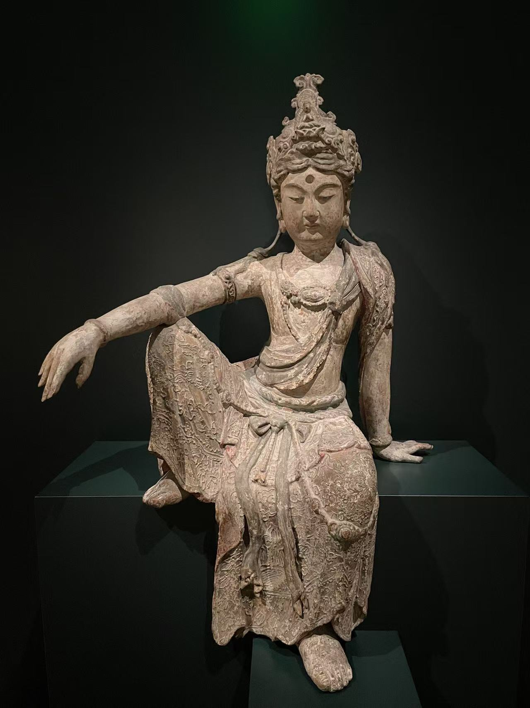

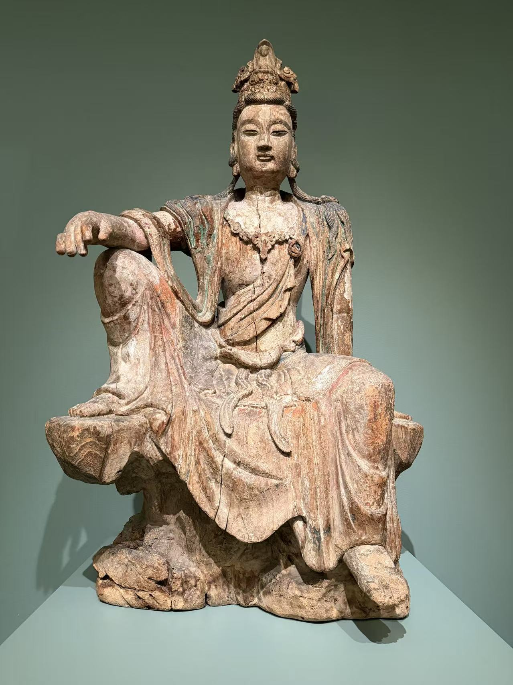

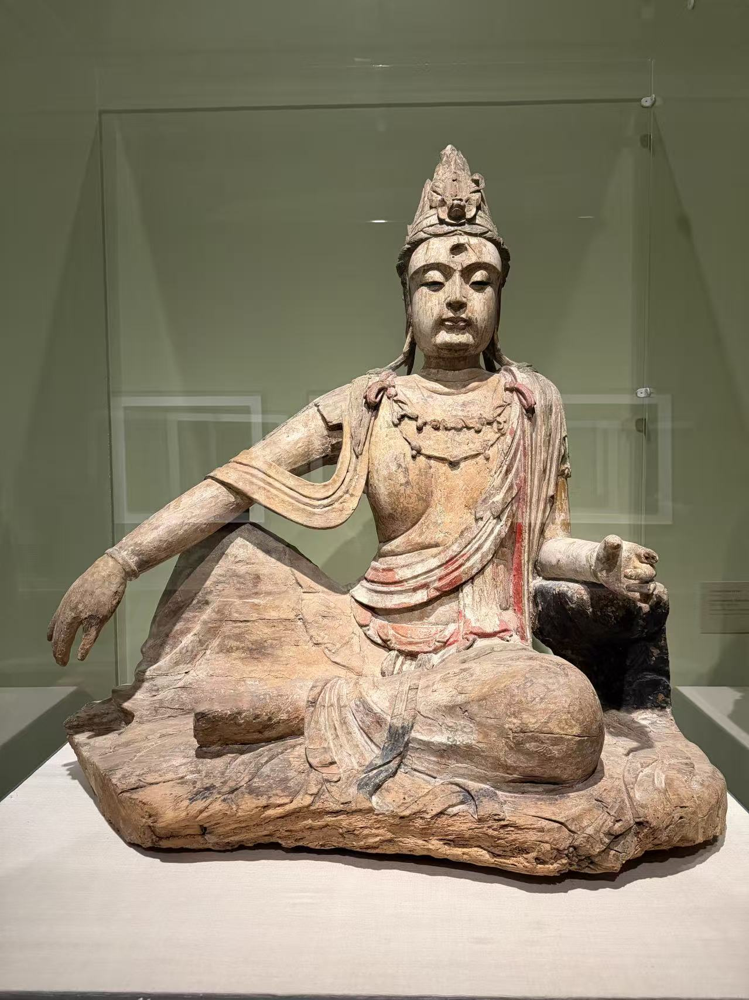
波特兰 · 波特兰艺术博物馆08
观音菩萨坐像
Avalokitesvara (Guanyin)
- 年代
- 13—14世纪
- 材质
- 木，残存彩绘
- 编号
- 38.52
一手自然下垂，另一手撑在身侧的岩座上；颈肩处的红彩与身体的木色形成对照。
作品札记与资料
展签注明以Ella M. Hirsch基金购藏，更早的流转记录尚不明确。
基本信息据现场展签整理；照片 © Merton。

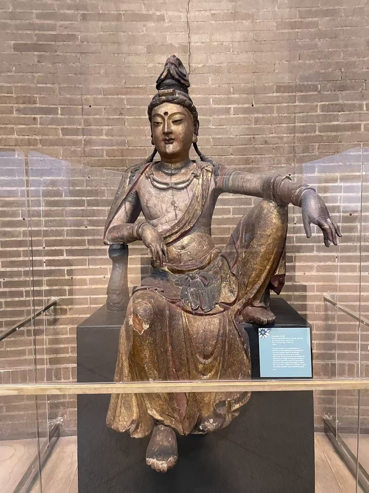

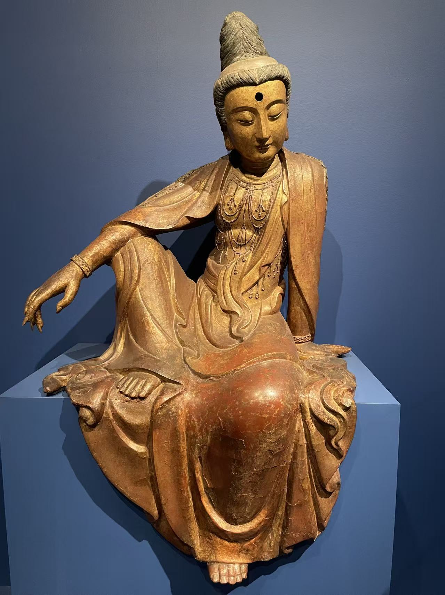
巴尔的摩 · 沃尔特斯艺术博物馆10
观音菩萨坐像
Bodhisattva Guanyin
- 年代
- 14世纪末—15世纪，明
- 材质
- 夹纻干漆，填料漆层、金与彩绘（馆方材料栏：bulked lacquer）
- 编号
- 25.256
金色面庞与暗红衣裙相映，手指与长袖形成流畅的曲线。
也见：干漆与漆塑造像 →
作品札记与资料
馆方说明，这尊像以浸漆织物包覆泥芯，硬化后脱去内芯，连纤细的手指也是中空的；X光检查还发现内壁有含朱砂的颜料。它经巴黎卢芹斋公司之手，由多丽丝·杜克于1937年10月7日购得，2006年由其慈善基金会捐赠沃尔特斯。
馆方材料栏记作 bulked lacquer，工艺说明则描述了浸漆织物脱芯的中空结构。
基本信息据现场展签整理；照片 © Merton。

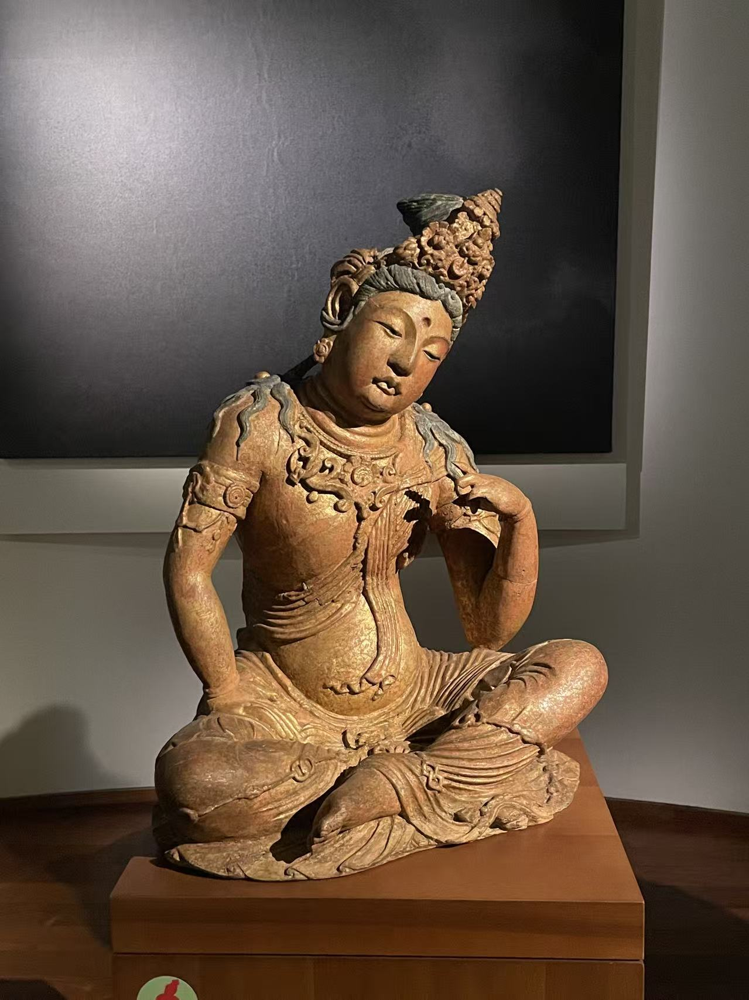
巴黎 · 吉美亚洲艺术博物馆11
观音菩萨坐像
Le bodhisattva Avalokiteshvara (chinois : Guanyin) assis
- 年代
- 宋或金
- 材质
- 石灰岩，残存彩绘
- 编号
- 未辨清
倾斜的头部、微抬的左膝和靠近面颊的手，形成与其他自在坐像不同的节奏。
作品札记与资料
这尊石灰岩菩萨与木雕坐像姿态相近，石面上的衣褶与木雕的转折可以对照着看。
藏品编号尚未辨清。
基本信息据现场展签整理；照片 © Merton。

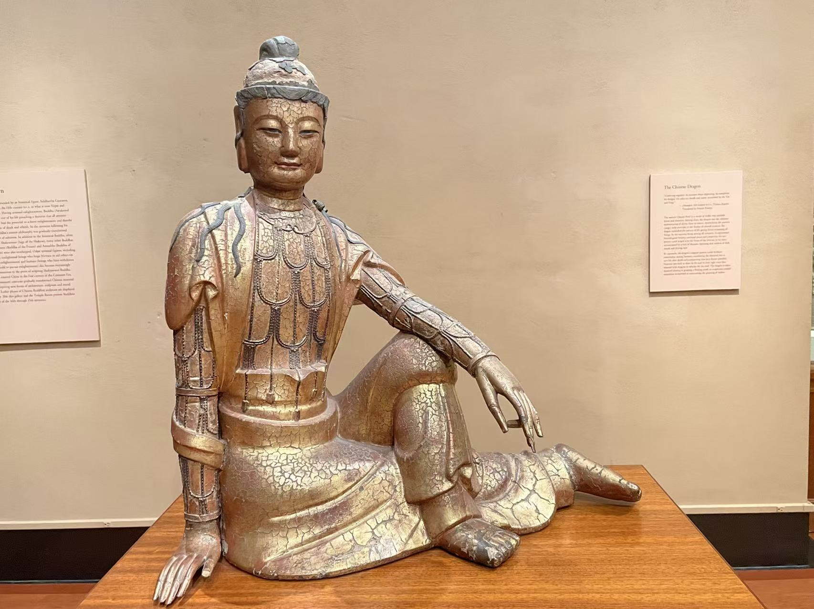